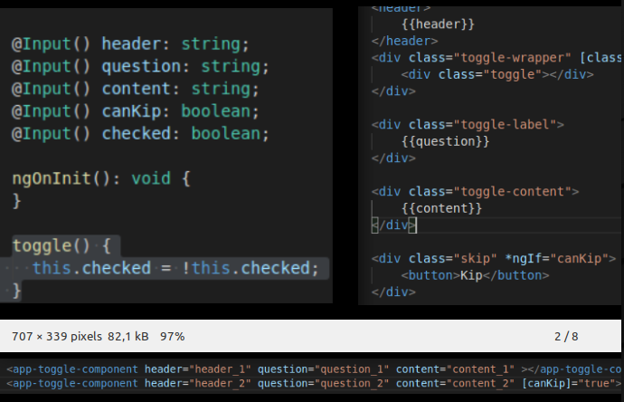

- sử dụng @Input() @Output
- để thêm các tính năng, thay đổi cấu trúc component con
- Vấn đề: muốn thêm mới tính năng, thay đổi cấu trúc component con thì phải thay đổi source component con và chỗ gọi component
- thay đổi khá nhiều component con và nơi gọi component con, gây ra bug
Coding

-Thêm tính năng hoặc thay đổi cấu trúc component con mà không muốn gây ảnh hưởng quá nhiều đến component con và nơi gọi nớ
- sử dụng component projection để triếu các chức năng, cấu trúc mới vào component con